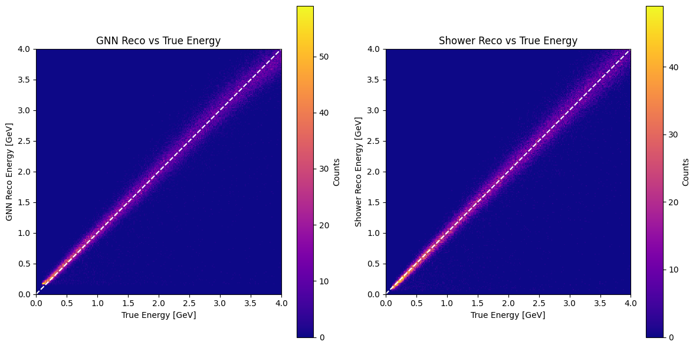
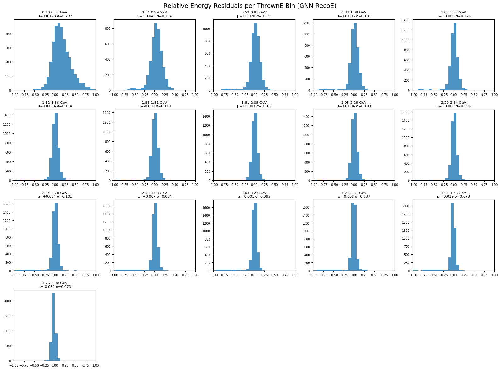
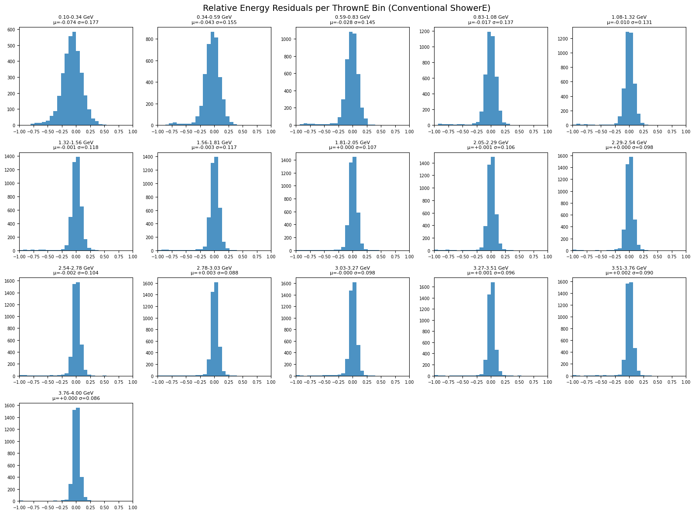
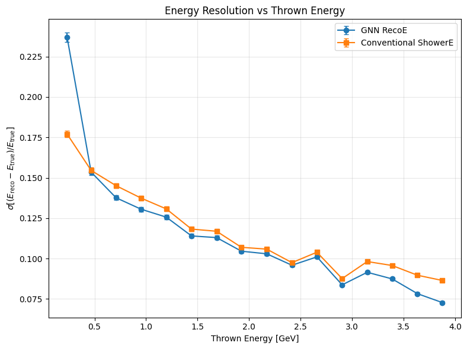

Graph Neural Network for GlueX FCAL data - Regression Tutorial#
%pip -q install uproot awkward torch-geometric scikit-learn safetensors tqdm > /dev/null
import torch
print(torch.__version__)
print("CUDA available:", torch.cuda.is_available())
print("CUDA:", torch.version.cuda)
2.10.0+cu128
CUDA available: True
CUDA: 12.8
import os
from urllib.parse import urlparse
import urllib.request
from tqdm import tqdm
import uproot
import awkward as ak
import numpy as np
import torch
import torch.nn as nn
import torch.nn.functional as F
from torch.utils.data import Dataset
from torch_geometric.data import Data
from torch_geometric.loader import DataLoader
from torch_geometric.nn import SAGEConv, global_mean_pool, global_max_pool
import matplotlib.pyplot as plt
from contextlib import nullcontext
class DownloadProgressBar(tqdm):
def update_to(self, blocks=1, block_size=1, total_size=None):
if total_size is not None:
self.total = total_size
self.update(blocks * block_size - self.n)
def download(url, target_dir):
os.makedirs(target_dir, exist_ok=True)
filename = os.path.basename(urlparse(url).path)
local_path = os.path.join(target_dir, filename)
if os.path.exists(local_path):
print(f"✅ File already exists: {local_path}")
return local_path
print(f"⬇️ Downloading {filename} from {url}")
with DownloadProgressBar(unit='B', unit_scale=True, miniters=1, desc=filename) as t:
urllib.request.urlretrieve(url, filename=local_path, reporthook=t.update_to)
print(f"✅ Download complete: {local_path}")
return local_path
data_dir = "data"
unformatted_particle_data_url = "https://huggingface.co/datasets/AI4EIC/DNP2025-tutorial/resolve/main/unformatted_dataset/ParticleGunDataSet_800k.root"
data_dir = "data"
gun_root = download(unformatted_particle_data_url, data_dir)
⬇️ Downloading ParticleGunDataSet_800k.root from https://huggingface.co/datasets/AI4EIC/DNP2025-tutorial/resolve/main/unformatted_dataset/ParticleGunDataSet_800k.root
ParticleGunDataSet_800k.root: 102MB [00:03, 30.4MB/s]
✅ Download complete: data/ParticleGunDataSet_800k.root
Read ROOT arrays#
tree = uproot.open(gun_root)["FCALShowers"]
branches = [
"rows", "cols", "energies",
"showerE", "thrownEnergy",
"numBlocks", "isNearBorder",
"isSplitOff", "isPhotonShower"
]
arr = tree.arrays(branches, library="ak")
rows_ak = arr["rows"]
cols_ak = arr["cols"]
en_ak = arr["energies"]
showerE = ak.to_numpy(arr["showerE"]).astype(np.float32)
thrownE = ak.to_numpy(arr["thrownEnergy"]).astype(np.float32)
numBlocks = ak.to_numpy(arr["numBlocks"]).astype(np.int32)
isNearBorder = ak.to_numpy(arr["isNearBorder"]).astype(bool)
isSplit = ak.to_numpy(arr["isSplitOff"]).astype(bool)
isPhoton = ak.to_numpy(arr["isPhotonShower"]).astype(bool)
Keep Photons Only
photon_idx = np.where(isPhoton)[0]
print("Total events:", len(isPhoton))
print("Photon events kept:", len(photon_idx))
Total events: 814151
Photon events kept: 434845
Train/Val/Test Split#
from sklearn.model_selection import train_test_split
indices = photon_idx
train_idx, temp_idx = train_test_split(indices, test_size=0.30, random_state=42)
val_idx, test_idx = train_test_split(temp_idx, test_size=0.50, random_state=42)
print(f"Train: {len(train_idx)}")
print(f"Val: {len(val_idx)}")
print(f"Test: {len(test_idx)}")
Train: 304391
Val: 65227
Test: 65227
Graph Construction#
FCAL_GEOMETRY = (59, 59)
ENERGY_SCALE = 0.05
CLIP_MAX = 2.0
def logE_norm(E, e0=ENERGY_SCALE, emax=CLIP_MAX, eps=1e-9):
E = np.clip(E.astype(np.float32, copy=False), 0.0, emax)
Z = np.log1p(E / np.float32(e0))
Z = Z / np.log1p(np.float32(emax) / np.float32(e0))
return np.clip(Z, 0.0, 1.0).astype(np.float32)
def build_edges_8n(rows, cols):
idx = {(int(r), int(c)): i for i, (r, c) in enumerate(zip(rows, cols))}
neigh = [(-1,-1), (-1,0), (-1,1),
( 0,-1), ( 0,1),
( 1,-1), ( 1,0), ( 1,1)]
edges = []
for i, (r, c) in enumerate(zip(rows, cols)):
r = int(r)
c = int(c)
for dr, dc in neigh:
j = idx.get((r + dr, c + dc), None)
if j is not None:
edges.append((i, j))
if len(edges) == 0:
return torch.empty((2, 0), dtype=torch.long)
return torch.tensor(edges, dtype=torch.long).t().contiguous()
def shower_to_graph(rows, cols, energies, showerE, numBlocks, isNearBorder, eps=1e-9):
rows = np.asarray(rows, dtype=np.int64)
cols = np.asarray(cols, dtype=np.int64)
Eraw = np.asarray(energies, dtype=np.float32)
if len(Eraw) == 0:
return None
E = logE_norm(Eraw)
Esum = float(Eraw.sum()) + eps
row_c = float((rows * Eraw).sum() / Esum)
col_c = float((cols * Eraw).sum() / Esum)
dx = (rows - row_c).astype(np.float32)
dy = (cols - col_c).astype(np.float32)
rr = np.sqrt(dx * dx + dy * dy).astype(np.float32)
row_n = (rows.astype(np.float32) / (FCAL_GEOMETRY[0] - 1)) * 2 - 1
col_n = (cols.astype(np.float32) / (FCAL_GEOMETRY[1] - 1)) * 2 - 1
Efrac = (Eraw / Esum).astype(np.float32)
logE = np.log(Eraw + eps).astype(np.float32)
# Node features:
# [row_n, col_n, E_logscaled, logEraw, Efrac, dx, dy, rr]
x = np.stack([row_n, col_n, E, logE, Efrac, dx, dy, rr], axis=1).astype(np.float32)
x = torch.tensor(x, dtype=torch.float32)
edge_index = build_edges_8n(rows, cols)
data = Data(x=x, edge_index=edge_index)
data.g = torch.tensor([[float(showerE), float(numBlocks), float(isNearBorder)]], dtype=torch.float32)
return data
Dataset for Regression#
data.y= thrownEnergy if you want to predict the true energy from the graphkeep data.showerEas the conventional baseline for later comparison
class FCALPhotonRegressionDataset(Dataset):
def __init__(self, idx_list, target="thrownE"):
self.idx = np.asarray(idx_list, dtype=np.int64)
self.target = target
def __len__(self):
return len(self.idx)
def __getitem__(self, i):
j = int(self.idx[i])
rows = ak.to_numpy(rows_ak[j])
cols = ak.to_numpy(cols_ak[j])
ens = ak.to_numpy(en_ak[j])
data = shower_to_graph(
rows, cols, ens,
showerE=showerE[j],
numBlocks=numBlocks[j],
isNearBorder=isNearBorder[j]
)
if data is None:
raise RuntimeError(f"Empty graph encountered at index {j}")
# Regression target
if self.target == "thrownE":
target_value = float(thrownE[j])
elif self.target == "showerE":
target_value = float(showerE[j])
else:
raise ValueError("target must be 'thrownE' or 'showerE'")
data.y = torch.tensor([target_value], dtype=torch.float32)
# Useful metadata
data.showerE = torch.tensor([float(showerE[j])], dtype=torch.float32)
data.thrownE = torch.tensor([float(thrownE[j])], dtype=torch.float32)
data.numBlocks = torch.tensor([float(numBlocks[j])], dtype=torch.float32)
data.isNearBorder = torch.tensor([float(isNearBorder[j])], dtype=torch.float32)
return data
DataLoaders#
BATCH_SIZE = 512
train_loader = DataLoader(
FCALPhotonRegressionDataset(train_idx, target="thrownE"),
batch_size=BATCH_SIZE,
shuffle=True
)
val_loader = DataLoader(
FCALPhotonRegressionDataset(val_idx, target="thrownE"),
batch_size=BATCH_SIZE,
shuffle=False
)
test_loader = DataLoader(
FCALPhotonRegressionDataset(test_idx, target="thrownE"),
batch_size=BATCH_SIZE,
shuffle=False
)
batch = next(iter(train_loader))
batch
DataBatch(x=[4067, 8], edge_index=[2, 16664], g=[512, 3], y=[512], showerE=[512], thrownE=[512], numBlocks=[512], isNearBorder=[512], batch=[4067], ptr=[513])
GNN model for Regression#
Built for scalar regression
Main changes:
final output size is 1
no softmax/logits
same graph pooling structure
class SmallGNNRegressor(nn.Module):
def __init__(self, node_in=8, g_in=3, hidden=64, dropout=0.1):
super().__init__()
self.conv1 = SAGEConv(node_in, 64)
self.conv2 = SAGEConv(64, 64)
self.conv3 = SAGEConv(64, hidden)
self.head = nn.Sequential(
nn.Linear(2 * hidden + g_in, 128),
nn.ReLU(),
nn.Dropout(dropout),
nn.Linear(128, 1)
)
def forward(self, data):
x, ei, b = data.x, data.edge_index, data.batch
x = F.relu(self.conv1(x, ei))
x = F.relu(self.conv2(x, ei))
x = F.relu(self.conv3(x, ei))
pooled = torch.cat(
[global_mean_pool(x, b), global_max_pool(x, b)],
dim=1
)
out = self.head(torch.cat([pooled, data.g], dim=1))
return out.view(-1)
Evaluation Function for Regression#
DEVICE = "cuda" if torch.cuda.is_available() else "cpu"
USE_AMP = (DEVICE == "cuda")
@torch.inference_mode()
def evaluate_gnn_regression(model, loader, desc="Eval"):
model.eval().to(DEVICE)
ys, preds = [], []
showerEs, thrownEs = [], []
total_loss = 0.0
total_n = 0
bar = tqdm(loader, desc=desc, leave=False)
for batch in bar:
batch = batch.to(DEVICE)
pred = model(batch) # [B]
yb = batch.y.view(-1) # [B]
loss = F.mse_loss(pred, yb, reduction="sum")
total_loss += float(loss.item())
total_n += yb.numel()
ys.append(yb.cpu().numpy())
preds.append(pred.cpu().numpy())
showerEs.append(batch.showerE.view(-1).cpu().numpy())
thrownEs.append(batch.thrownE.view(-1).cpu().numpy())
y_true = np.concatenate(ys) if ys else np.array([])
y_pred = np.concatenate(preds) if preds else np.array([])
showerE_out = np.concatenate(showerEs) if showerEs else np.array([])
thrownE_out = np.concatenate(thrownEs) if thrownEs else np.array([])
mse = total_loss / max(1, total_n)
rmse = np.sqrt(mse) if total_n > 0 else np.nan
mae = np.mean(np.abs(y_pred - y_true)) if total_n > 0 else np.nan
return mse, rmse, mae, y_true, y_pred, showerE_out, thrownE_out
Training Loop for Regression#
Try HuberLoss or MSELoss. HuberLoss is often more stable.
def train_gnn_regression(model, opt, train_loader, val_loader, epochs=20):
scaler = torch.amp.GradScaler('cuda') if USE_AMP else None
criterion = nn.HuberLoss(delta=0.1)
model.to(DEVICE)
best_val_rmse = float("inf")
best_state = None
patience = 5
bad = 0
for epoch in range(1, epochs + 1):
model.train()
running_loss = 0.0
seen = 0
bar = tqdm(train_loader, desc=f"Epoch {epoch}/{epochs} (train)", leave=False)
for batch in bar:
batch = batch.to(DEVICE)
yb = batch.y.view(-1)
opt.zero_grad(set_to_none=True)
ctx = torch.amp.autocast(device_type='cuda', dtype=torch.float16) if USE_AMP else nullcontext()
with ctx:
pred = model(batch)
loss = criterion(pred, yb)
if USE_AMP:
scaler.scale(loss).backward()
scaler.step(opt)
scaler.update()
else:
loss.backward()
opt.step()
running_loss += float(loss.item()) * yb.size(0)
seen += yb.size(0)
bar.set_postfix(avg_loss=f"{running_loss / max(1, seen):.4f}")
train_loss = running_loss / max(1, seen)
val_mse, val_rmse, val_mae, _, _, _, _ = evaluate_gnn_regression(
model, val_loader, desc=f"Epoch {epoch}/{epochs} (val)"
)
print(
f"Epoch {epoch:02d} | "
f"train_loss {train_loss:.4f} | "
f"val_rmse {val_rmse:.4f} | "
f"val_mae {val_mae:.4f}"
)
if val_rmse < best_val_rmse:
best_val_rmse = val_rmse
best_state = {k: v.detach().cpu().clone() for k, v in model.state_dict().items()}
bad = 0
print(f"✓ New best RMSE: {best_val_rmse:.4f}")
else:
bad += 1
if bad >= patience:
print("Early stopping.")
break
if best_state is not None:
model.load_state_dict(best_state)
return model
Run Training#
EPOCHS = 2
LR = 3e-4
model = SmallGNNRegressor().to(torch.float32)
opt = torch.optim.AdamW(model.parameters(), lr=LR)
model = train_gnn_regression(model, opt, train_loader, val_loader, epochs=EPOCHS)
Epoch 1/2 (train): 0%| | 0/595 [00:00<?, ?it/s]/usr/local/lib/python3.12/dist-packages/torch_geometric/utils/_scatter.py:91: UserWarning: The usage of `scatter(reduce='max')` can be accelerated via the 'torch-scatter' package, but it was not found
warnings.warn(
Epoch 01 | train_loss 0.0201 | val_rmse 0.2211 | val_mae 0.1239
✓ New best RMSE: 0.2211
Epoch 02 | train_loss 0.0105 | val_rmse 0.2168 | val_mae 0.1202
✓ New best RMSE: 0.2168
Evaluate on Test Set#
test_mse, test_rmse, test_mae, true_E, pred_E, shower_reco_E, thrown_E_meta = evaluate_gnn_regression(
model, test_loader, desc="Test"
)
print(f"Test | RMSE = {test_rmse:.4f} GeV | MAE = {test_mae:.4f} GeV")
Test | RMSE = 0.2165 GeV | MAE = 0.1192 GeV
Plots#
GNN reco vs true energy#
def plot_reco_vs_true(true_E, pred_E, shower_reco_E=None, bins=250):
ncols = 2 if shower_reco_E is not None else 1
fig, axes = plt.subplots(1, ncols, figsize=(6 * ncols, 6))
if ncols == 1:
axes = [axes]
h1 = axes[0].hist2d(true_E, pred_E, bins=bins, range=[[0, 4], [0, 4]], cmap="plasma")
axes[0].plot([0, 4], [0, 4], "w--", lw=1.5)
axes[0].set_xlim(0, 4)
axes[0].set_ylim(0, 4)
axes[0].set_aspect("equal", adjustable="box")
axes[0].set_title("GNN Reco vs True Energy")
axes[0].set_xlabel("True Energy [GeV]")
axes[0].set_ylabel("GNN Reco Energy [GeV]")
plt.colorbar(h1[3], ax=axes[0], label="Counts")
if shower_reco_E is not None:
h2 = axes[1].hist2d(true_E, shower_reco_E, bins=bins, range=[[0, 4], [0, 4]], cmap="plasma")
axes[1].plot([0, 4], [0, 4], "w--", lw=1.5)
axes[1].set_xlim(0, 4)
axes[1].set_ylim(0, 4)
axes[1].set_aspect("equal", adjustable="box")
axes[1].set_title("Shower Reco vs True Energy")
axes[1].set_xlabel("True Energy [GeV]")
axes[1].set_ylabel("Shower Reco Energy [GeV]")
plt.colorbar(h2[3], ax=axes[1], label="Counts")
plt.tight_layout()
plt.show()
plot_reco_vs_true(true_E, pred_E, shower_reco_E=shower_reco_E)

Residual histograms per thrown-energy bin#
def relative_residual(y_true, y_pred):
return (y_pred - y_true) / np.clip(y_true, 1e-12, None)
def plot_residuals_per_energy_bin(y_true, y_pred, title, nbins=16, xrange=(-1, 1)):
edges = np.linspace(y_true.min(), y_true.max(), nbins + 1)
ncols = 5
nrows = int(np.ceil(nbins / ncols))
fig, axes = plt.subplots(nrows, ncols, figsize=(16, 3 * nrows))
axes = np.atleast_1d(axes).ravel()
resid = relative_residual(y_true, y_pred)
for i in range(nbins):
ax = axes[i]
lo, hi = edges[i], edges[i + 1]
mask = (y_true >= lo) & (y_true < hi)
r = resid[mask]
if len(r) == 0:
ax.axis("off")
continue
mu = np.mean(r)
sigma = np.std(r)
ax.hist(r, bins=30, range=xrange, alpha=0.8)
ax.set_title(f"{lo:.2f}-{hi:.2f} GeV\nμ={mu:+.3f} σ={sigma:.3f}", fontsize=8)
ax.set_xlim(*xrange)
ax.tick_params(labelsize=7)
for j in range(nbins, len(axes)):
axes[j].axis("off")
fig.suptitle(title, fontsize=14)
fig.tight_layout()
plt.show()
plot_residuals_per_energy_bin(
true_E,
pred_E,
title="Relative Energy Residuals per ThrownE Bin (GNN RecoE)"
)
plot_residuals_per_energy_bin(
true_E,
shower_reco_E,
title="Relative Energy Residuals per ThrownE Bin (Conventional ShowerE)"
)


Energy resolution vs true energy#
def compute_resolution_vs_energy(y_true, y_pred, nbins=16):
edges = np.linspace(y_true.min(), y_true.max(), nbins + 1)
centers, sigmas, sigma_errs = [], [], []
resid = relative_residual(y_true, y_pred)
for i in range(nbins):
lo, hi = edges[i], edges[i + 1]
mask = (y_true >= lo) & (y_true < hi)
r = resid[mask]
t = y_true[mask]
if len(r) < 10:
continue
sigma = np.std(r)
sigma_err = sigma / np.sqrt(2 * (len(r) - 1))
centers.append(np.mean(t))
sigmas.append(sigma)
sigma_errs.append(sigma_err)
return np.array(centers), np.array(sigmas), np.array(sigma_errs)
def plot_resolution_comparison(true_E, pred_E, shower_reco_E, nbins=16):
c1, s1, e1 = compute_resolution_vs_energy(true_E, pred_E, nbins=nbins)
c2, s2, e2 = compute_resolution_vs_energy(true_E, shower_reco_E, nbins=nbins)
plt.figure(figsize=(8, 6))
plt.errorbar(c1, s1, yerr=e1, marker="o", capsize=3, label="GNN RecoE")
plt.errorbar(c2, s2, yerr=e2, marker="s", capsize=3, label="Conventional ShowerE")
plt.xlabel("Thrown Energy [GeV]")
plt.ylabel(r"$\sigma[(E_{\mathrm{reco}}-E_{\mathrm{true}})/E_{\mathrm{true}}]$")
plt.title("Energy Resolution vs Thrown Energy")
plt.grid(True, alpha=0.3)
plt.legend()
plt.tight_layout()
plt.show()
plot_resolution_comparison(true_E, pred_E, shower_reco_E, nbins=16)
